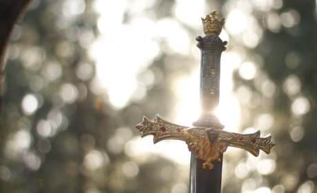
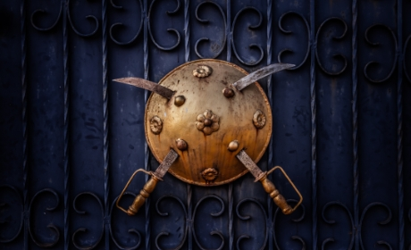
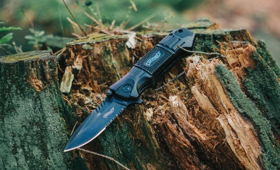
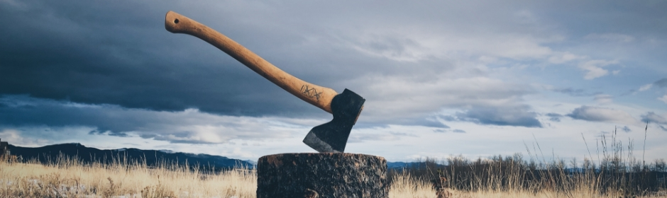

- 

- 
- 
- 
conheça as armas que amamos fazer
"Com certeza a melhor aquisição que eu tive nesse ano, pedi um machado viking e o resultado ficou muito melhor do que eu esperava!"
- Gustavo Torres
"Empresa super de confiança. Além da entrega rápida, o material utilizado também é da melhor procedência possível."
- Renato Borges
"Quem ainda não tem uma The Bladesmith não sabe o que tá perdendo, tenho a minha já faz 2 anos e ela continua em perfeito estado."
- Lucia Ribeiro
A The Bladesmith é uma marca de forjamento de itens decorativos, e repreendemos utilizar os nossos produtos para fins criminosos.
"Grande é o guerreiro que sai da guerra com sua espada limpa"